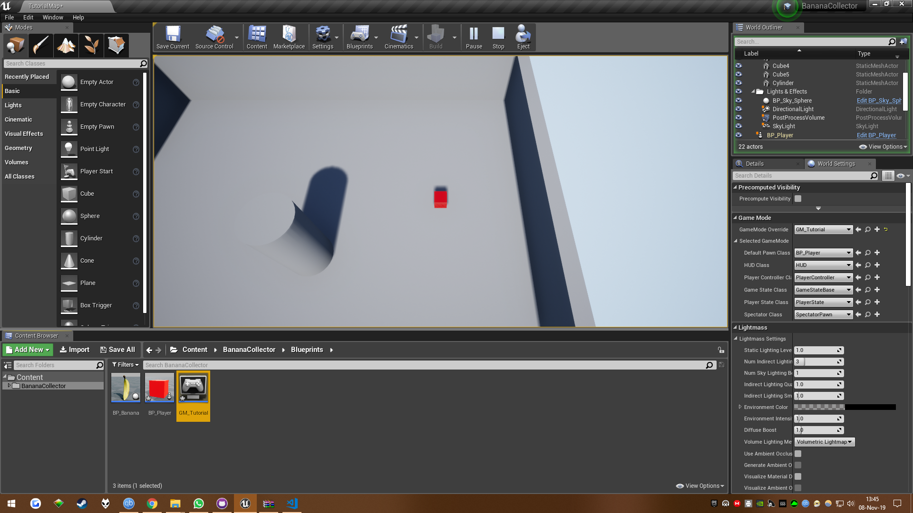
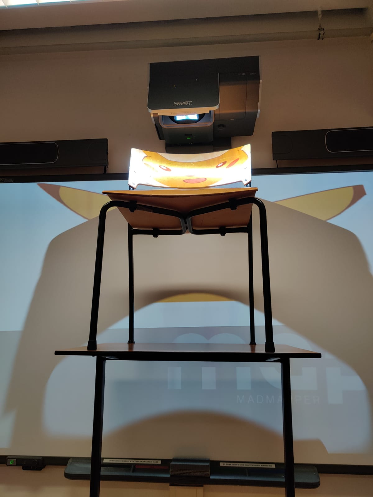

Unreal Engine
Tijdens deze workshop werd er gewerkt met de Unreal Engine en met Madmapper. Een engine is een software systeem wat het produceren van dingen makkelijker maakt omdat je niet alles hoeft te coderen.
Engines worden vaak gebruikt bij het maken van games, dan is het een 'game engine'. Unreal is een grote speler op het gebied van deze game engines. Meestal zijn game engines niet gratis openbaar verkrijgbaar.
De unreal engine is dat echter wel, waardoor het relatief makkelijk is om er mee aan de slag te gaan. Tijdens de workshop leren we omgaan met de unreal engine en maken we een simpele game.
Dit doen we
door deze tutorial te volgen.
We starten het programma en worden gegroet door een omgeving met twee stoelen en een tafel.
De engine is zo gemaakt dat het voor mensen die niet kunnen coderen ook mogelijk is om met games aan de slag te gaan.
In de eerste opdracht leren we hoe je nieuwe objecten plaatst in de game wereld. De tutorial levert allerlei files aan van bananen. Een van die banenen plaatsen we vervolgens in de gameomgeving:
In dit voorbeeld is het een banaan maar je kunt allerlei bestanden toevoegen aan de gamewereld zolang het maar een .fbx bestand is.
We zien op de bovenstaande afbeelding nu dus onze banaan. We kunnen nu dus elementen plaatsen in de gamewereld. De tutorial geeft aan dat je met deze simpele kennis in theorie dus al
levels kunt designen. De banaan is echter nog grijs en past daardoor thematisch nog niet goed in de gamewereld. Om de banaan van kleur en textuur te voorzien gebruiken we een .jpg bestand.
De banaan is nu dus voorzien van kleur, maar is verder nog erg statisch. Om hier verandering aan te brengen leren we hoe je objecten kunt manipuleren. In de onderstaande video hebben we de banaan op een podium geplaatst wat vanzelf langzaam ronddraait.
Het maken van een game
De camera is geplaatst en we hebben een karakter: Een rood blokje.
Het blokje beweegt:
Het blokje heeft nu collision: Het mag niet meer door muren heen bewegen.
Met het blokje kunnen we nu dus dingen aanraken. Door de bananen te plaatsen en aan te geven dat ze moeten verdwijnen zodra het blokje ze aanraakt hebben we een simpele game gemaakt:
Madmapper
Met madmapper kun je afbeeldingen in drie dimensies manipuleren. Dat is handig als je je twee dimensionale afbeelding in het echt wilt projecteren.
